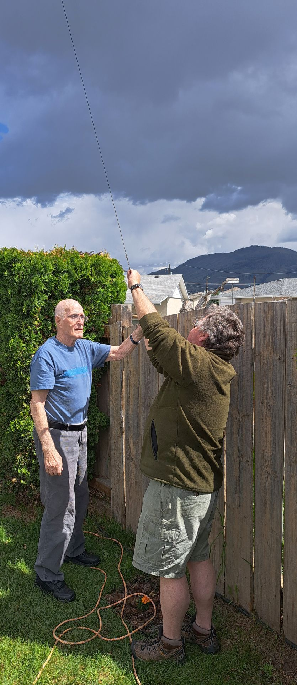
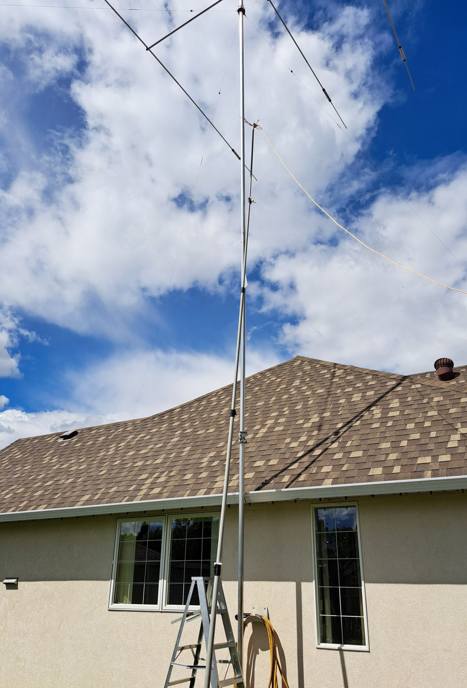
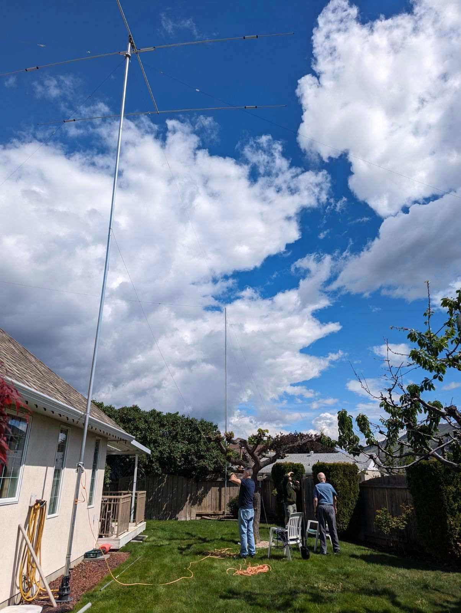
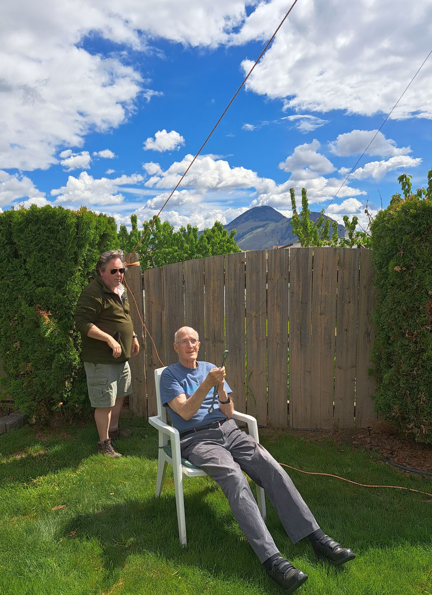

Emergency repair of Vern's HF mast May 18-19
Back to StoriesStory 793
Thu, 2024-05-23 20:31 — VE7FSR


Myles VE7FSR received a panicked call from Vern VE7VGO on Saturday, May 18.
The big storm that blew through on the Thursday evening broke one of the guy wires on Vern's HF beam antenna and the antenna and mast were severely bent over and at risk of falling on his neighbours house.
Myles went over on Saturday afternoon and helped Vern to install a temporary guy which was tied off to his fruit tree, with the hope it would keep the mast from falling over until we could get a crew out to perform a permanent fix.
A call went out on Saturday night, and Jordan VE7OSX , Ralph VA7VZA , and Myles agreed to meet at 11am on Sunday to help Vern get things fixed.
Jordan was quick to get up on the roof and untangled the two guy wires that were twisted together, and he removed them from where they had become stuck under a roof vent.
Myles used his 30ft telescopic mast to connect a temporary rope guy that was used to get the mast back to vertical, and the temporary rope guy supported the mast/antenna while Vern and Ralph worked on splicing the broken aircraft cable guy wire.


The repair crew started at 11am, and we had things finished and cleaned up by 11:50am.
Not bad for a bunch of amateurs!
Thank you very much to Jordan for your quick work on the roof, for Ralph for bringing all the high quality tools, and for Vern to being so calm when we were all worried the thing was going to blow over!
We are blessed to have such a great club and such awesome members who will drop everything to help a fellow ham.